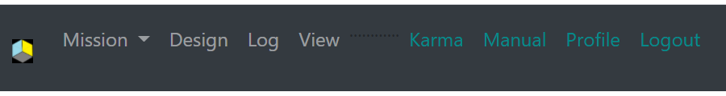
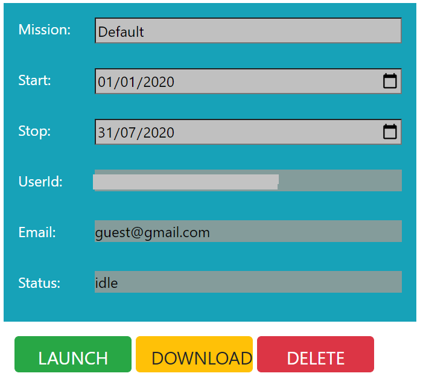
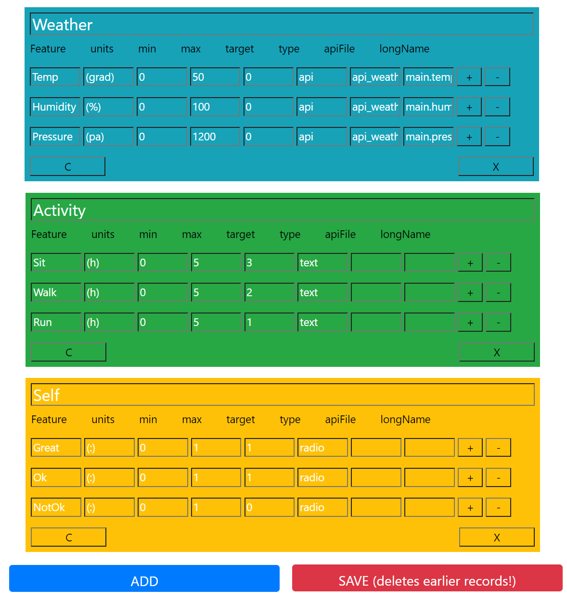
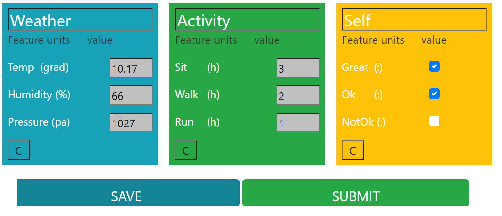
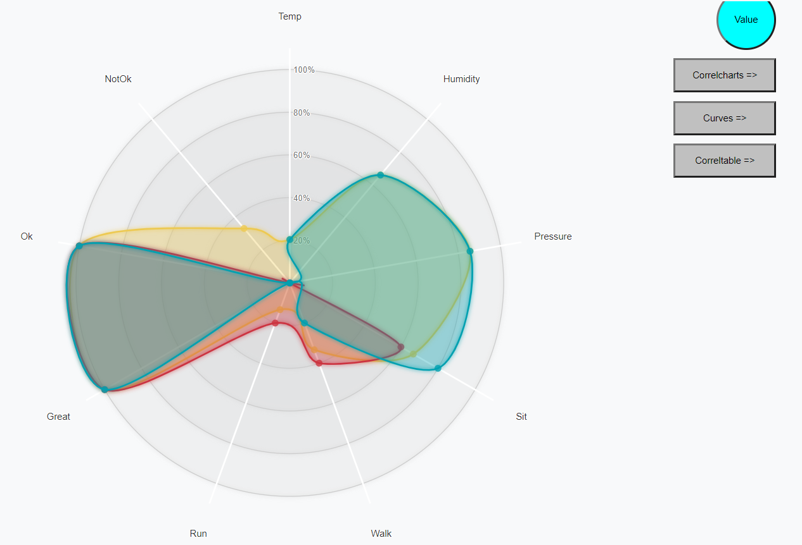
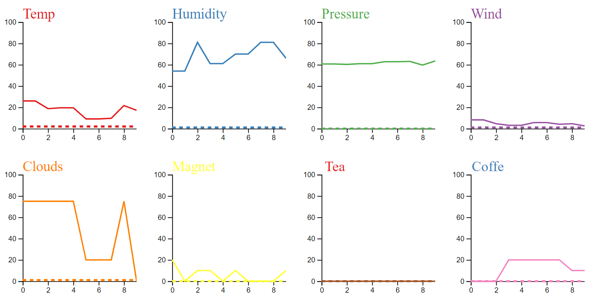
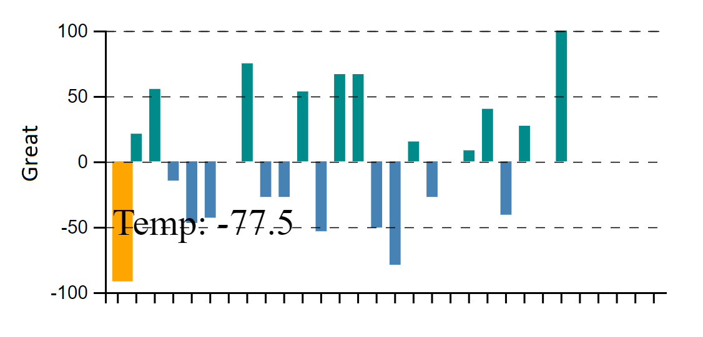
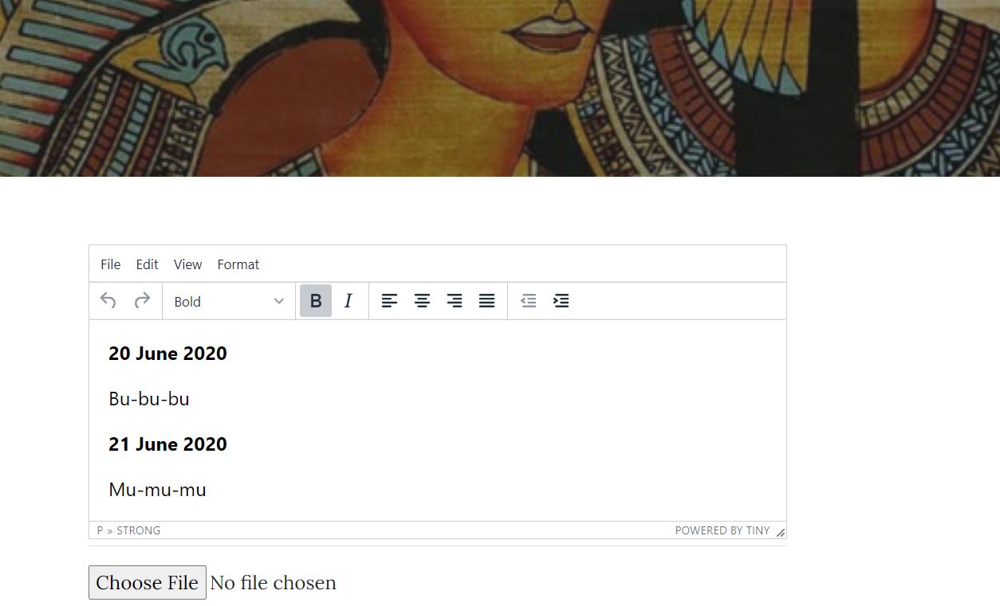
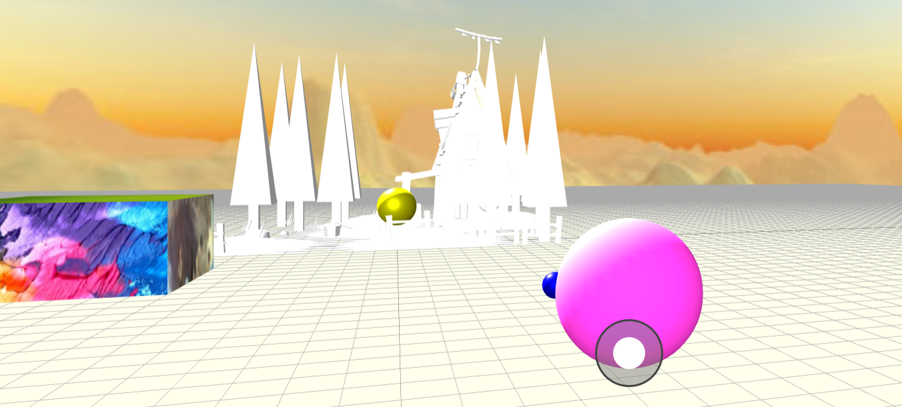
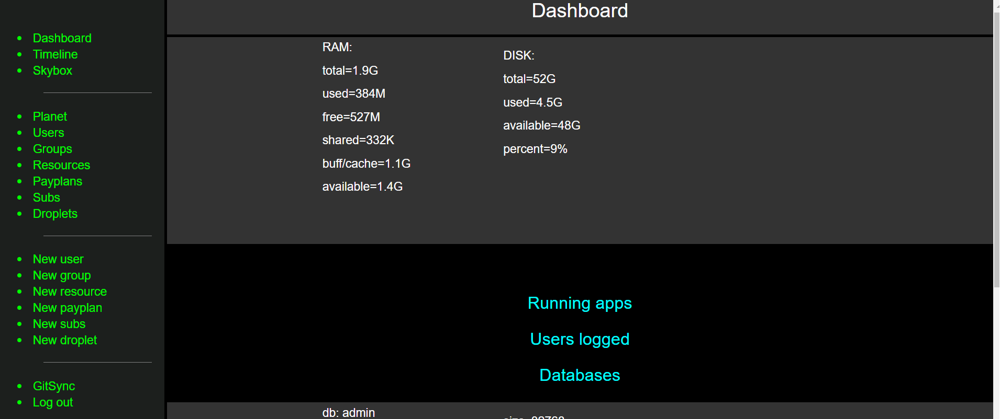

BUNDLEVERSE MANUAL
Nugzar Margvelashvili
email: ... INCOMPLETE DRAFT: PLS, DO NOT USE
Hobart, June 2020, Last updated June 2020
INTRODUCTION
1.1 Bundleverse
Bundleverse is a collection of Bundles.1.2 Bundle
A Bundle is a collection of properties which define any item residing in Bundleverse. Remember a bundle definition of a person – every individual is a collection of properties, such as, for example, physical, biological, social, psychological, spiritual etcetera. Get rid of all these properties and the person is gone. Analogously, in Bundleverse everything is a Bundle of properties.A Bundle is a description of an item - an information, or a knowledge about it. Unlike any information in general (e.g. a theory, a story, a novel), Bundles provide also instructions to follow in order to recover features characteristic of the corresponding entities. In other words, Bundles have more in common with user-manuals rather than fiction-stories. They tell us how to create, operate and maintain (or evolve) specific entities.
Anyone in Bundleverse can design a new Bundle from scratch. Whether that new Bundle transforms into a particular form or remains just an abstract theoretical construct, is to be seeing through practice. Instantiated Bundles reveal themselves through various manifestations – an image, a function, a taste, a smell, experience etc. For many Bundles people are hardwired with the right set of receptors to perceive these manifestations. In special cases, however, the observer will have to have a special training or education to be able to perceive that Bundle.
Bundles are flexible and highly customisable
In what follows, when we say Bundle, we will mean predominantly a personality Bundle (in general, these Bundles can be representing anything, but in this document we will be concerned predominantly with people). A Bundle is a dynamic, evolving entity. It defines who we are but also provides a description of our idealised, better self and informs us how to get there. Some people want to change the diet, others may want to become smarter, happier, improve emotional intelligence etc. To achieve these goals, we set some rules or procedures to follow. However, these rules and procedures may not always work for us – we may want to change the diet, but cannot refuse a slice of cake, we may want to wake up early, but sleep in, our goals might be misleading, our passions and feelings may bend our reasons. To figure out which strategies work best for us and what kind of goals we really want to achieve, we iterate and refine them through the succession of short-term missions. At the start of every new mission, we analyse outcomes from the previous mission, and refine our goals and strategies to succeed in the next mission. After a number of iterations, we are likely to have a better understanding of what we really want to achieve and how to get it.
1.3 Bundle-beings
Bundle-beings (inhabitants of the Bundleverse) design, instantiate, and maintain Bundleverse through practices. Without practices the Bundleverse does not exist in any particular form - it crumbles and transforms into a superposition of abstract hypothetical states.Bundle-beings tend to maintain a digital representation of themselves in a cyberspace. As time goes on this digital representation becomes an irreducible part of their identity and includes records of their past, present and future (desirable) states. This data can have value from the medical, sentimental, social and other perspectives. It may tell a Bundle-being what he or she is right now, and also what this person ought to become in the future, and how to get there.
1.4 Bundle-pods
DecentralisedA digital part of Bundleverse is to support the development and maintenance of the rest of the Bundleverse. Rather than having a single authority supervising all users and their data in this digital space, the vision is a collection of distributed servers accommodating autonomous teams operating these servers in a decentralised, almost self-sufficient manner. A new user can either join one of the established teams or have his or her own server set up from scratch (which would require a certain level of IT expertise). In the rest of this manual we will call these Bundleverse servers as Bundle-pods.
A Bundle-pod is a digital environment accommodating Bundle-beings and offering them resources to maintain and refine their Bundles via missions. A mission is a short-term practice to evolve a personality-Bundle from the current state to the desirable future state.
Community oriented
A Bundle-pod provides a community-oriented digital environment – it is to accommodate a team of Bundle-beings.
Private data ownership
Bundle-beings own their data in Bundleverse. Any time they can download records collected on a Bundle-pod and then delete the original copy on the server. Having these records downloaded and erased on a regular basis (e.g. after every mission), makes sure that the remote server always holds only a minor fraction of the total records. Long-term records belong to the Bundle-being and they are kept safe on his or her local disks disconnected from the network. It is up to the owner to share this data with kids, friends, GP, whoever (or just keep it private for himself).
1.5 Mission
A mission is a short-term iterative practice by a Bundle-being altering his or her routine, day-to-day activity. These alterations accumulated with time leave an imprint on the BB’s identity. Because of the tight coupling between the human identity and the Bundleverse, this altered identity eventually translates into the altered state of the Bundleverse itself.Mission steps
- Design your own Bundle.
- Practice to transform this Bundle into the desired state.
- Log and analyse outcomes of the mission.
- Refine and iterate.
Example of missions
Tracker. Grandma complaining magnetic storms causing her to have headaches. A bundle has only 2 features: K-index of the magnetic storms recorded automatically via api, and a radio-button for a grandma to click on when she has a headache. After several weeks you may have enough data to figure out if there is a correlation between magnetic storms and headaches.
Explorer. The goal of the mission is to improve your physical fitness. A bundle has a number of properties, such as weather, diet, physical activity, self-assessment. Some features are delivered automatically via api, other features require your manual input. After several weeks you may start to see patterns and correlations. Refine and iterate.
Sizmarian. If you think these examples are not cool enough for you and you need something more subtle and challenging to get excited, then go for it - take a deep breath and dive deep into the unknown to explore new realms (remember in Bundleverse everything is in your hands). For example, try to design and instantiate a new personality from scratch. Let’s call it a sizmarian personality (after the Georgian sizmari – dream). The sizmarian bundle will have a number of features including the description of practices specific to sizmarians. The goal of the mission is to reach some special sizmarian state of Being. Note that we don’t have to flesh out all the details of the sizmarian personality upfront. We can start by making a draft outline (see dot points below), and then run it through missions and refine via iterations. Another point to make here is that digital resources have only a secondary, assistive role in these missions - you instantiate a new person in real life by running practices also in real life.
- Sizmarians are species of Bundle-beings.
- Characteristic of sizmarians is some special state of Being (e.g. being cool, positive, caring, generous etcetera). This state of Being transcends all other features of sizmarians and makes them resistant to dogmatic teachings - sizmarians respect beliefs by others but when it comes to their own theories they take them easy, often with a touch of an irony.
- Sizmarians design and maintain their own afterlife (don’t know exactly how – be creative).
- Sizmarians run projects to make this world a better place (e.g. eradicate poverty, promote education, advance science, fight injustice etc).
- Sizmarians build and maintain digital twins of themselves.
- For a sizmarian life is great - it is always bright and full of exciting surprises. Make no mistake here, sizmarians are aware of the suffering and misery permeating this world, but they also know there is a lot of nice stuff out there and they believe broken parts eventually can be fixed.
1.6 License
This program is free software: you can redistribute it and/or modify it under the terms of the GNU Affero General Public License as published by the Free Software Foundation, either version 3 of the License, or any later version.1.7 Disclaimer
This program is distributed in the hope that it will be useful, but WITHOUT ANY WARRANTY; without even the implied warranty of MERCHANTABILITY or FITNESS FOR A PARTICULAR PURPOSE. See the GNU Affero General Public License for more details.Beware Bundleverse is a one-man project and it is still work in progress. Most of the work is done on holidays and over week-ends. I’ll try my best answering your questions, but don’t expect rapid responses. Beware also despite appearances, deep-down I am an extremely lazy person.
1.7 Terms of use
...2. How to install a Bundle-pod
- Prerequisites
- Ubuntu 20.04 or 18.04. Must have open the following ports 22, 80, 443,3021,8080?
- Have Admin user account
- Have npm and Nodejs installed (v 12.6 and above)
- Have MongoDB installed
- Have a domain name and LetsEncrypt installed for that domain name
- ssh to your server as an admin, cd to the /root directory, and get master.zip from the github wget https://github.com/nugzarm/sizmari/archive/master.zip
- Inside the /root directory unzip master.zip (if unzip is not available install it via: apt install unzip). This will create folder /root/sizmari-master/ unzip master.zip (run /root/ sizmari-master/install_bundle.sh) (!!!!!!!!!!!!!!!!!NOT Implemented) The script runs the following commands:
- Rename /root/sizmari-master/ to /root/prototype/ mv sizmari-master prototype
- From the command line run cp /root/.env_cut /root/.env
- Replace “newsite.com” with your domain name and then run in the command line: find /root/prototype \( -type d -name .git -prune \) -o -type f -print0 | xargs -0 sed -i 's/bundledev\.com/newsite.com/g'
- Replace “newsite” with your domain name (without TLD extension) and then run in the command line: find /root/prototype \( -type d -name .git -prune \) -o -type f -print0 | xargs -0 sed -i 's/bundledev/newsite/'
- to run in test mode, run in the command line: ./srv_start.sh
- To test, enter in browser example.com, wait for the page to download and then login as an admin user: (!!!!!!!!!!!!!!!!! Not implemented) email: admin@gmail.com password: admin
- to stop, run in the command line: ./srv_stop.sh
- to run in production: nohup ./srv_start.sh &
- If needed open /root/.env and update manually keys in /root/.env
3. Frontend
3.1 Registration
To register with a Bundle-pod, you can either join an established team or become a founder by setting up a new Bundle-pod with a new team from scratch. The exact policy for joining an established team might vary from one team to another (some teams letting anyone register online, others preferring a permissioned access). An alternative to joining an established team is to set up your own Bundle-pod and build up your team there. Provisioning and maintaining this server will require a certain level of IT expertise (in this case, having at least one user with IT skills in your team might be a good idea).3.2 Workflow

Design page. Having a particular mission selected, the next step is to go to the “Design” page to create a bundle template for that mission.
Log page. Once you are happy with your bundle template, save it and go to the “Log” page to fill in your new bundle with data.
The “View” page is to visualise your mission data.
The “Blog” is to record anything that does not fit into the bundle formal.
The “Skybox” is a 3D environment for your team to cooperate (still work in progress).
Note that the bundle template has to be designed only once, at the start of the mission. Having it established, next time you log into the system, you go straight to the “Log” page to record new data.
3.3 Missions
Bundleverse provides a number of pre-built, default missions, readily available upon a registration. The user can also create any number of his own customised missions or update prebuilt missions. To create a new mission, enter a new name into the current mission table, and click on the “LAUNCH” button. To download data for this mission on your local computer, click “DOWNLOAD” button. To delete this mission, click “DELETE” button. This will erase from the server all data accumulated over the course of this mission. If you intend to keep this data on your local PC, make sure you download this mission first before deleting it.
3.4 Design
To display a bundle template for the current mission, click on the “Design” button.To create a new bundle template for a new mission from scratch, click on the “Design” button. This will redirect you to new page where you can build a new template using add, save, and delete buttons.
A bundle template is a collection of tables. Each table represents a particular property (e.g physical, biological, social etc). Each property table describes a collection of features assigned to that property (e.g. weight, exercise, height considered physical features, a diet may belong to to table with biological properties etc.)
Note that saving a new bundle-template deletes all the earlier records and starts this mission again.

Feature, units, min, max, target, type, apiFile, and longName.
- Feature cell shows a feature name (must be alphanumeric)
- Units must not exceed 10 characters
- Min is the minimum value of the feature (must be numeric). Set to 0 for a radio button.
- Max is the maxim values of the feature (must be numeric). Set to 1 for the radio button.
- Target is the desired target value to be achieved during the mission (must lie within the min-max range).
-
Type is either “text”, “radio” or “api”.
- “text” is a default type and indicates input text area
- “radio” is for a checkbox, and
- “api” is for an api input (to be provisioned by the admin)
- apiFile – is a name of the json file holding api data (admin access only). The data are to be generated by api script (to be written by admin, and called regularly to get new data).
- longName is the name of the feature as shown in the api json file (admin access only).
3.5 Log
The “Log” page is where you enter your data on a regular basis over the course of the mission.Some of these fields will be filled by api. Others will require your manual input.
“SAVE” button lets you to accumulate your records over the course of the day (or several days) and then submit all these data at once by clicking “SUBMIT” button.

3.6 View
The View page shows a spider-plot (you need to save the Log data first in order to view this plot). Radar-plot. For every feature in you log tables, the spider-plot shows the target value (red), the latest recorded value (blue) and the mean value over the course of the mission (yellow). All values are normalised to vary from 0 to 100%, corresponding to min and max values, respectively, as indicated in the design tables. The navigation circle in the top-right is to switch between targets, last records, and mean values on the spider-plot.
Curves. The Curves button redirects to the page with time series of the recorded data.

Correlations. The Correlcharts button redirects to the page with correlations between these data.

3.7 Blog
You can create and edit your own blog-posts. You can read posts by others but cannot edit them. All members of the team can read your posts, but they cannot edit or delete them (except the admin user, who can edit and delete any blogpost).
The blog editor is a based on tinyMCE plugin. No custom features included.

3.8 SkyBox
SkyBox is a 3D environment where you can walk around and chat with others. Built with threejs.org on top of the 3D multiplayer game from the online course material.Still in early development stage.

4. Backend
Backend is for an Admin user to monitor current state of the Bundle-pod and update it when needed.4.1 Dashboard
Upon the login, the Admin user lands on a Dashboard page intended as an information desk about the server state – allocation of disk memory, RAM usage, number of logged users, state of databases, running apps, etcetera (still in early development stage).
Timeline and Skybox links on a sidebar redirect to Blog and Skybox apps.
4.2 Planet
The planet page provides a general information about the website, such as the founder name, name of the site, maximum number of users, and connections to other sites (to be added to skybox dropdown list of links to other skyboxes). The name planet is due to historical reason when distributed servers were considered a collection of planets (I guess this could be changed to something less pretentious and more meaningful).4.3 Users
This link provides a list of all registered users. Click on any of them, and the administrator is redirected to the user profile page, where he/she can either delete or update user-specific data (such as an allocation to a particular user group). At the moment only admin can change this data (to be fixed in the future, to let users access and edit their own profile data, except group allocations).4.4 Groups
This link shows a list of all user groups on this site. Click on any of these groups to edit or delete it. Every site must have an “admin” group. Do not delete it! New users currently are allocated to the "visitor" group. Other recommended groups are "founder" and "citizen". In general, "admin" user can create (or edit/delete) any group.4.5 Resources
Resources page shows web applications running on this server and accessible through the image-links on this page (the name resources again is due to historical reasons, each resource should be called just a webapp or a child webapp). Click on any of the images and you are redirected to the page with a more detailed info about a particular resource (ie webapp). This information includes the name of the app, internal URL, the name of the owner of the resource, etc. Every resource has a list of permissions for different groups of users to access and do something with this resource. These permissions can be accessed and edited through the Update link on the Details page. The idea was whatever groups are defined on the child app (resource), for any user the main app can just pass on the list of permitted actions to the the child app (resource) and let that child app (resource) to figure out how to use this list. Another option is just to pass on to the child app current users ID, and then let this child-app to interrogate permissions api to get permissions for this user. The child app may then allocate this user to its own group, with its own allocation of permissions. This was a theory. In practice, however, this list of permissions has never been used (so far at least). Instead we had admin and non-admin users defined on all resources and so far this simple classification of the user roles was sufficient for our purposes.4.6 Pyaplan
The Payplan and Subscription pages are to track payment plans ans subscriptions of external payment gateways if there is any implemented on this site (eg Stripe, or Paypal). Each of these external gateways keep records of transaction and user/customer info in clouds. Bundleverse enables you to keep a copy of kritcal data locally on your own server.Every resource (webapp) can have a Payplan associated with it. A payplan can have many subscriptions associated with it. Every subscription a subscription by a particular user/customer.
4.7 Subscription
4.8 Droplets / Services
4.9 Create new
User Admin can create a new user and allocate this user to a particular user group. Note that upon a registration fron the front page a user is allocated by default to the visitors group. Admin can then assign that user to another group. Note that according to this structure, a user can belong only to a single group.Group Creating a new group is easy. Just don’t create too many to keep it manageable.
Resource Admin can not create new resource through Bundleverse – he/she can only register a new resource on this site (give it a name, assign internal url, permissions etc.). The resource itself must be already installed and running on this server.
Payplan and Subscription When creating a payplan, the admin is to select of a resource to be served by this payplan. When creating a subscription for a user, and admin is to select a payplan for this user.
Droplet …
5. Security features
Server:Firewall to open only required ports and control access rates (Iptables) SSL to enable HTTPS encryption
Web:
Helmet to promote secure communication via setting right HTTP headers , validation/sanitazation of the user input to mitigate injection attack, DOMPurify against XSS.
Acknowledgements:
OSSAppendix A: Subscription workflow
-
Start Stripe child app.
./srv_start.sh -
Access child app to start a recurrent subscription via configuring
Stripe environment (on the remote site)
main-app.js:
app.use('/stripeSubs', redirectIfNotRegistered,
proxy({ target: 'http://127.0.0.1:3035', changeOrigin: true, secure: false, pathRewrite: { '^/stripeSubs': '/' }, onProxyReq })); -
Expose webhook endpoint to listen for Stripe events
(must match webhook set on the remote Stripe)
subscriptionRoutesStripe.js:
router.post("/stripeRecu/webhook", subscription_controller.subscription_stripeRecu_webhook)
subscriptionConstrollerStripe.js:
exports.subscription_stripeRecu_webhook = ..
subscriptionController.js – handles local subscriptions subscriptionControllerStripe.js – includes stripeWebhook() and createStripeLocalCopy() & updateStripeLocalCopy() functions. stripeWebhook(….) Listens for Stripe events and calls either createStripeLocalCopy() or updateStripeLocalCopy(). createStripeLocalCopy() & updateStripeLocalCopy() either create or update local copies of Stripe subscriptions; they also fetch apis to either create or delete both local droplets and DO droplets. (eg “/droplets/create” and “/dropletsDO/droplet_create_DO”) Note that without “subscriptionControllerStripe.js” local subscriptions (“subscriptionController.js”) and local droplets (“dropletController.js”) are isolated from each other (they do not communicate).
Webhook Event Type processing workflow Customer.subscription.created Invoice.payment.succeeded Invoice.payment.failed Retrieve stripe subscription and customer email Retrieve stripe subscription and customer email Retrieve stripe subscription and customer email From user email find local user From user email find local user From user email find local user Create subscriptionLocalCopy Update subscriptionLocalCopy Pass on user._id Pass on user._id Pass on user._id Create new droplet(user._id) Do nothing sub.status == active sub.status == expired Update subscription LocalCopy Update subscription LocalCopy Issue Warning! Delete droplet
dropletController.js – Either creates or deletes local droplets (apis fetched either by subscriptionControllerStripe.js or an admin sidebar); For a “free user account” it also paints external server provided by the user via /droplet_id endpoint; dropletControllerDO.js – Either creates or deletes DO droplets (apis endpoints fetched by the subscriptionControllerStripe.js). If DO droplet has been created, paint it.
“subscriptionControllerStripe.js” provides an example of the recurrent subscription set via Stripe payment platform. To have another platform, the child app (subapps/stripe-subscriptions/) must be replaced by another payment app. The Stripe webhook (/stripeRecu/webhook) will have to be changed too.
“dropletControllerDO.js” provides an example of the service offered by DO api and accessed via the recurrent subscription. Routines in “dropletControllerDO.js” are called from the “subscriptionControllerStripe.js”. To have another service provisioned via Stripe, the “dropletControllerDO.js” must be replaced with another file (eg membership.js).
Stripe app has a footprint in:
srv_start.sh
srv_stop.sh
subapps/stripe-subscriptions/
main-app.js:99:app.use('/stripeSubs', redirectIfNotRegistered, proxy …
controllers/userController.js:222: return res.redirect(process.env.PLANET_URL+'/stripeSubs/');
Stripe webhook is set via:
routes/subscriptionRoutesStripe.js:6: router.post("/stripeRecu/webhook" , …
controllers/subscriptionControllerStripe.js:21: exports.subscription_stripeRecu_webhook = [
Comment: Probably not the best structure. A cleaner separation between the main app, service and stripe would be achieved if we had a stipe-webhook allocated inside the Stripe child-app and the service script to have endpoints exposed to listen to messages from this webhook. When a new event is received from Stripe-external to the webhook on the child-app, the webhook triggers a particular function on the service-script by fetch-posting to a particular endpoint.
Back to root